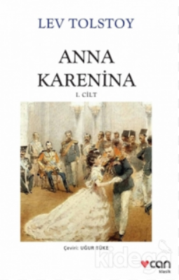

|
|
KitapYolu.com |
|  |
Anna Karenina “Ne yapalım?” dedi kendi kendine, kararlı bir şekilde. “Bu ne demek? Bu meseleye dosdoğru yaklaşmaktan korkuyor muyum?
Ne yani? Anna Karenina, tüm dünyada roman denince ilk akla gelen iki-üç kitaptan biri. Tolstoy’un eşsiz bir gözlem gücüyle Moskova ve Petersburg Tolstoy
Dil Türkçe
Load More
Kağıt Cinsi 2. Hamur Cilt Tipi Ciltsiz Basım Yeri TÜRKİYE Sayfa Sayısı 208 Yayın Tarihi Haziran-2020 Baskı Sayısı 20. Baskı Ölçü 13,5x21 |